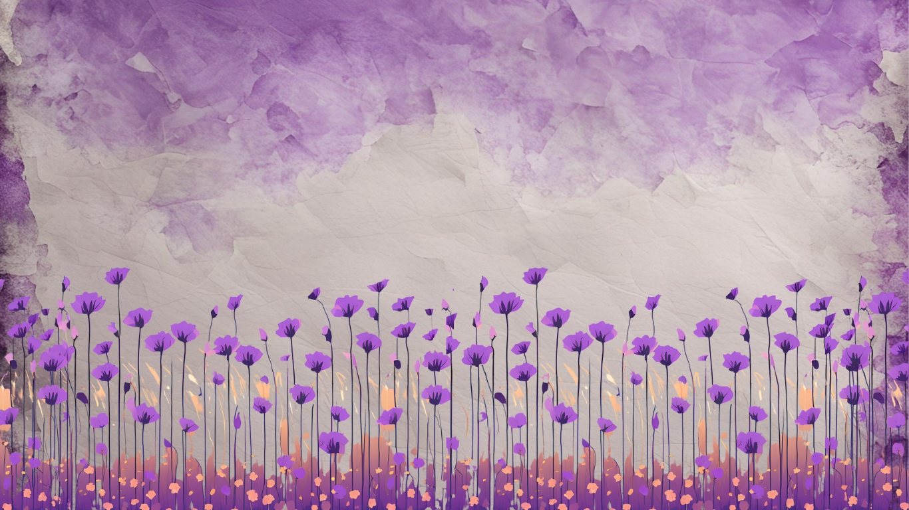

A Collection of Interests and Hobbies
Mae'sBook is a place you can explore original Short Stories, Character Profiles, and Personal Playlists
Whether you're bored, interested, or just curiuos do enjoy you're time here.
My digital book of each single inspiration that comes to mind that I consider insteresting and thus deserving to be saved.
This website is where i want to share my personal interests, this was built for myself to create a
memoir of the happy, intresting, and salad days of my life. Every page is a special juvenile creativety I've had.
In this digital collection, I have used photos, literacy, and audios to created those innovations to reality.
To me it’s not just a personal project, it’s a story, an experiences and every item here, is an emotion of that particular time.